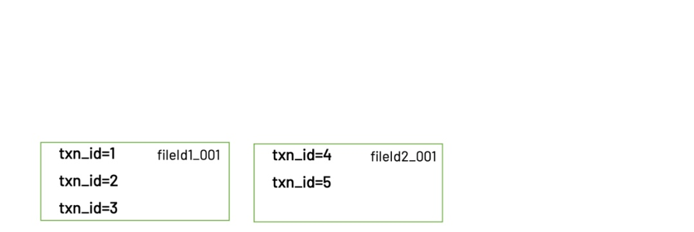
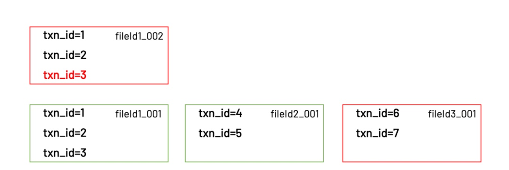
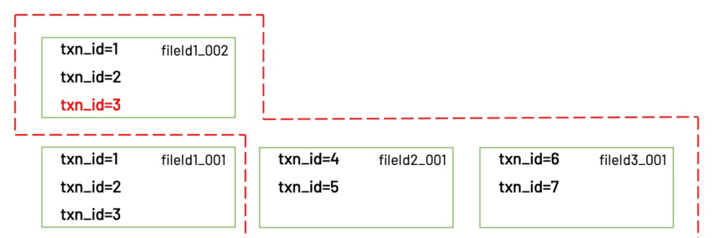
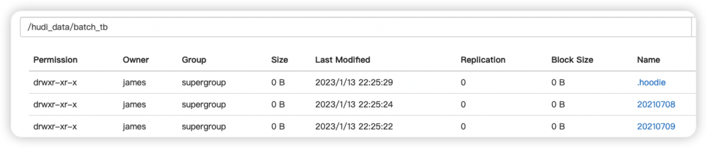
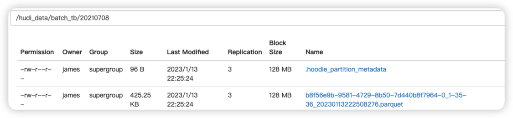
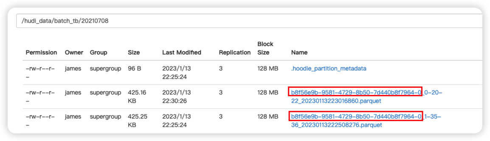
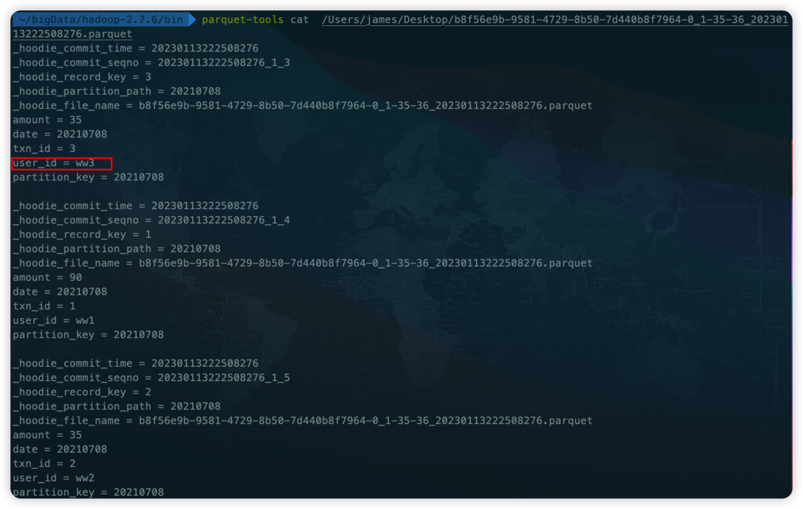
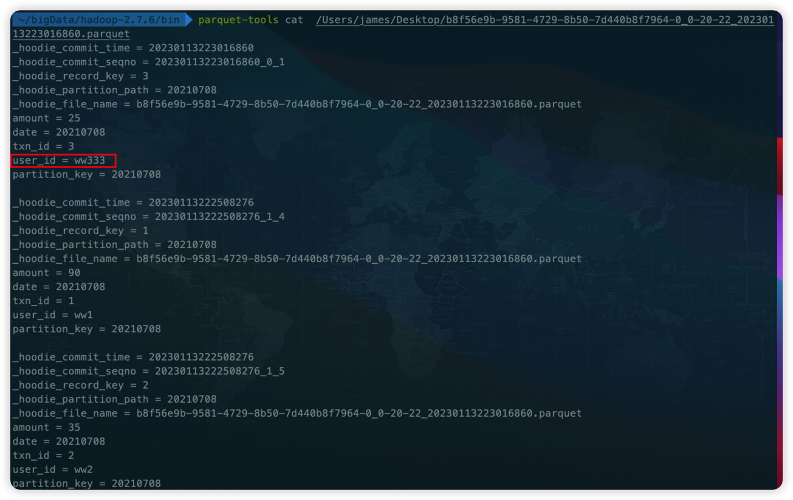
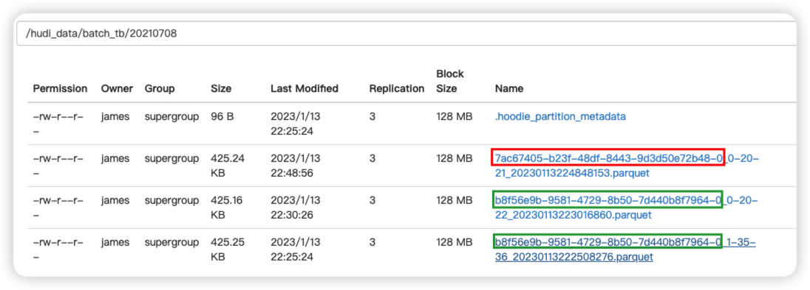

背景
首先介绍下Hudi的背景，因为背景对理解一个项目很关键。
Hudi，正式的全称是Hadoop Upsert Delete and Incremental。其实关于这个名字也不用太较真，因为都是后来附会上去的，从源代码里可以看到这个项目最初的名字是hoodie和现在的名字发音相同。但这个名字还是透露了一些信息的，那就是Hudi项目最初的设计目标:在hadoop上实现update和delete操作。
为什么会有update和delete的需求? uber在开源Hudi的文章中解释了:
最初uber使用的是Lambda架构，但是有个问题是计算逻辑分为批量和实时两种，要保持两者的逻辑完全一致很困难(毕竟是两套代码)。
然后uber转向了Kappa架构，使得两套代码变为-套，但是存储依然有两套，分别支持实时写入和批量写入。
为了把存储也统-起来，减少运维的压力，就需要让负责批量写入的存储系统也能支持实时写入，这就产生了update和delete的需求。为什么呢?有多种原因，例如实时计算常有的迟到数据，还有业务时效性要求以及一些合规需求(GDPR要 求平台允许用户删除自己的数据)。而众所众知的是，无论是HDFS还是云平台的对象存储(例如aws的s3，阿里云的oss等)，都不支持update而只 能overwrite,因此要实现update和delete功能，就必须在底层存储之上做文章。Hudi于 是应运而生。
Upsert原理解释
Upsert可以说是Hudi的招牌，正如上⼀节所说，Hudi最初的设计⽬标就是在hadoop上实现数据的update。于是这⾥的核⼼问题就是：
如何在⼀个只能overwrite的⽂件系统上实现update操作？
Hudi解决了这个问题，使⽤了⼀种很简单的思想，那就是：
把⼀个完整的⽂件拆分为多个“⼩⽂件”，当需要更新其中某条记录时，只要把包含这条记录的“⼩⽂件”给重写⼀遍即可。
Hudi最大的特征就是表类型有两种 COW和MOR，我们以COW表来举例说明更新写入原理。之所以先讲COW表，是因为这种类型的表原理更加简单，也是MOR表的基础。⽽且Hudi最初的版本只⽀持COW表，可 见这是Hudi的⽴项之本。
接下来⽤⼀个例⼦直观地展⽰下COW表的upsert是如何实现的。
⾸先，假设我们向⼀张Hudi表中预先写⼊了5⾏数据，如下
| txn_id | user_id | item_id | amount | date |
|---|---|---|---|---|
| 1 | 1 | 1 | 2 | 20220101 |
| 2 | 2 | 1 | 1 | 20220101 |
| 3 | 1 | 2 | 3 | 20220101 |
| 4 | 1 | 3 | 1 | 20220102 |
| 5 | 2 | 3 | 2 | 20220102 |
这时在我们的hdfs⾥⾯，会有下⾯2个⽬录，以及1个隐藏的.hoodie⽬录。
warehouse
├── .hoodie
├── 20220101
│ └── fileId1_001.parquet
└── 20220102
└── fileId2_001.parquet
⽂件名分为两部分，fileId是Hudi中的⼀个概念，后⾯会做解释，001则是commitId。
画成图就是

可以看到，属于20220101分区的3条数据保存在⼀个parquet⽂件：fileId1_001.parquet，属于20220102分区的2条数据则保存在另 ⼀个parquet⽂件：fileId2_001.parquet。
然后我们再写⼊3条新的数据。其中有2条数据是新增，1条数据是更新。写⼊的数据如下
| txn_id | user_id | item_id | amount | date |
|---|---|---|---|---|
| 3 | 1 | 2 | 5 | 20220101 |
| 6 | 1 | 4 | 1 | 20220103 |
| 7 | 2 | 3 | 2 | 20220103 |
写⼊完成后，hdfs⾥⾯的⽂件结构会变成这样
warehouse
├── .hoodie
├── 20220101
│ ├── fileId1_001.parquet
│ └── fileId1_002.parquet
├── 20220102
│ └── fileId2_001.parquet
└── 20220103
└── fileId3_001.parquet
注意.hoodie这个⽬录，⾥⾯保存了hudi的元数据。
画成图就是

可以看到，更新的那⼀条记录，实际被写⼊到了同⼀个分区下的新⽂件：fileId1_002.parquet。这个新⽂件的fileId和上⼀个相同，只不过 commitId变成了002。同时还有⼀个新⽂件：fileId3_001.parquet。
update到这⾥就算完成了，那么使⽤这张表的⽤户⼜是如何读到更新以后的数据呢？Hudi客户端在读取这张表时，会根据.hoodie⽬录下保 存的元数据信息，获知需要读取的⽂件是：fileId1_002.parquet，fileId2_001.parquet，fileId3_001.parquet。这些⽂件⾥保存的正是 最新的数据。

读取的是最新的⽂件
以上就是Hudi实现update的原理。在有了相对直观的理解之后，可以为我们后续学习Hudi打下扎实的基础
写入原理小结
1 | df.write.format("hudi"). |
注意到这⾥有两个必填的配置项：RECORDKEY_FIELD_OPT_KEY和PARTITIONPATH_FIELD_OPT_KEY，它们的含义是“作为 recordKey的字段名”，“作为partitionPath的字段名”。请记住这两个字段，在后⾯的写⼊过程中有⾮常重要的作⽤。
Upsert的过程整体分为3步（这⾥省略了很多不太重要的步骤）：
根据partitionPath进⾏重新分区。
根据recordKey确定哪些记录需要插⼊，哪些记录需要更新。对于需要更新的记录，还需要找到旧的记录所在的⽂件。（这个过程被 称为tagging）
把记录写⼊实际的⽂件。
Step1. 重新分区 ⽆论DataFrame在写⼊前是如何分区的，Hudi都会对它们进⾏重新分区。重新分区的依据就是partitionPath。partitionPath相同的 record都会被分到同⼀个partition，并交给⼀个executor负责写⼊。上⾯例⼦中的配置项PARTITIONPATH_FIELD_OPT_KEY就是⽤来 指定record⾥⾯的哪个字段作为partitionPath。
Step2. Tagging 在确定了每个record的partition之后，接下来做的就是tagging。tagging是写⼊过程中最重要的⼀步，核⼼逻辑是确定每条record是 insert还是update，以及如果是update，则定位到上次写⼊时的fileId。 Hudi如何确定⼀条record是insert还是update？是通过recordKey。⽤户在写⼊时需要指定每条record的recordKey，Hudi会⽤这个 recordKey和现有的数据进⾏⽐对，如果找到⼀条key相同的record，则认为这次新的写⼊是update，否则就是insert。 对于⼀条update的数据，也就是说之前曾经插⼊过相同key的record，那么Hudi会把旧的record的fileId取出来，作为这条新record的 fileId。之前⼀直没有解释fileId的含义，现在可以解释下了。fileId是Hudi为每条record赋予的id，⽤于标识这条record被保存在哪个⽂件 ⾥，或者更严格地说，是“哪⼀批⽂件”⾥。由于每次update都会⽣成⼀个新的⽂件，但是共享同⼀个fileId，所以最终会变成⼀批⽂件。 Hudi把具有相同fileId的⼀批⽂件称为file group。最后，fileId本⾝是⼀个uuid，是全局唯⼀的.
warehouse
├── .hoodie
├── 20220101
│ ├── fileId1_001.parquet
│ └── fileId1_002.parquet
├── 20220102
│ └── fileId2_001.parquet
└── 20220103
└── fileId3_001.parquet
⽂件名⾥包含fileId1的2个⽂件就是⼀个file group
整个tagging过程还有⼀个显⽽易见的问题，那就是tagging需要在已有的数据⾥寻找key相同的record，如果表的数据量⽐较⼤时会⾮常 耗时。为了解决这个问题，Hudi引⼊了index机制，这个后续再谈。
Step3. 写⼊⽂件
当tagging完成以后，就会开始真正地写⼊数据。Hudi会把需要写⼊的数据分为insert和update两部分，update的数据会⽤原来的fileId进 ⾏写⼊，insert的数据则会⽣成⼀个新的fileId⽤于写⼊。值得⼀提的是，insert的数据也不会全部写⼊到同⼀个⽂件，⽽是到达了⼀定阈值 （由hoodie.parquet.max.file.size配置项控制）以后，关闭当前⽂件，换⼀个新的⽂件继续写⼊（同时也会⽣成⼀个新的fileId）。
实践验证
写入代码:
1 | package com.zxd.prac.hudi |
插入第一批数据
1
2
3
4
5{"txn_id":1,"user_id":"ww1","amount":90,"date":"20210708"}
{"txn_id":2,"user_id":"ww2","amount":35,"date":"20210708"}
{"txn_id":3,"user_id":"ww3","amount":35,"date":"20210708"}
{"txn_id":4,"user_id":"ww4","amount":45,"date":"20210709"}
{"txn_id":5,"user_id":"ww5","amount":25,"date":"20210709"}
执行完成后,看一下效果图


2.插入第二批数据，其中txn_id为3的是更新操作，6 7为新增
1 | {"txn_id":3,"user_id":"ww333","amount":25,"date":"20210708"} |

我们看到08分区，此时又生成了一个parquent文件，我们不妨来看一下，第一个,第二个文件的内容都是什么
第一个文件内容:

第二个文件内容:

我们可以清晰的看到，更新的数据发生了变更，而老数据也保留了下来，所以说此时，最新的commit_id代表最新的状态，而file_id代表这插入的第一批数据即 txn_id $ \subset $ {1,2,3,4,5}
- 假如我们第三次插入,此时为新增操作，依然重点观察08分区
1 | {"txn_id":8,"user_id":"ww8","amount":25,"date":"20210708"} |

我们看一下最新的文件内容

可以看到只有最新这次插入的数据，相当于此次插入的数据是新的一批数据。

...
...
This is copyright.